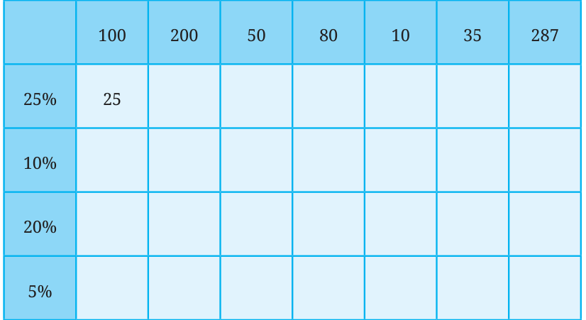

We just calculated 25% of 120. Is 25% the same as \(\frac{1}{4}\) th (a quarter)? Suppose we want to find 25% of 40. Is it the same as \(\frac{1}{4}\) th of 40? Yes, since 25 is \(\frac{1}{4}\) th (a quarter) of 100 ( \(\frac{25}{100} = \frac{1}{4}\) ). Therefore 25% of \(40 = \frac{25}{100} \times 40\) is the same as \(\frac{1}{4} \times 40\). Try to calculate (without using pen and paper) the indicated percentages of the values shown in the table below. Write your answers in the table.

How did you find these values? Discuss the methods with the class. Do you find anything interesting in the table? You may have noticed that 20% of a value is double that of 10% of the same value. This will always happen as 20% (20 parts out of 100) is twice that of 10% (10 parts out of 100).
Using this understanding, mentally calculate how much 40% of the values in the table above would be. What relationship do you observe among 20%, 5% and 25% of a value? It appears that (20% of y) \(+ (5%\) of y) \(= 25%\) of y. We can verify that this property always holds: ( \(\frac{20}{100} \times\) y) + ( \(\frac{5}{100} \times\) y) = ( \(\frac{25}{100} \times\) y).

Using this observation, mentally calculate how much 15% of the values in the table would be.
Suppose you have to mentally calculate the following percentages of some value: 75%, 90%, 70%, 55%. How would you do it? Discuss.